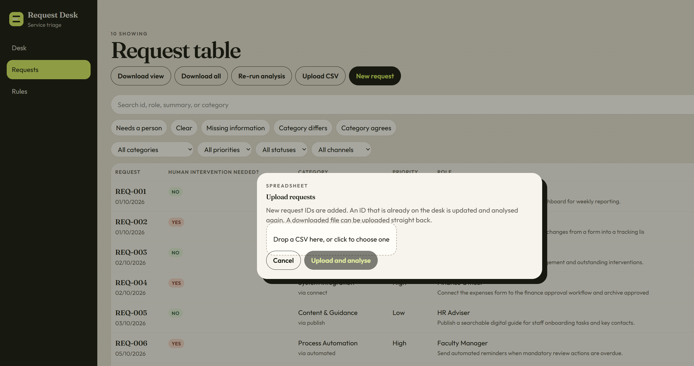
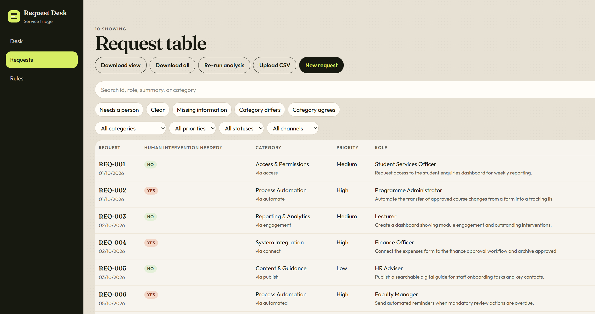
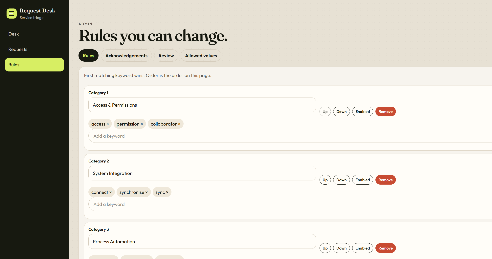
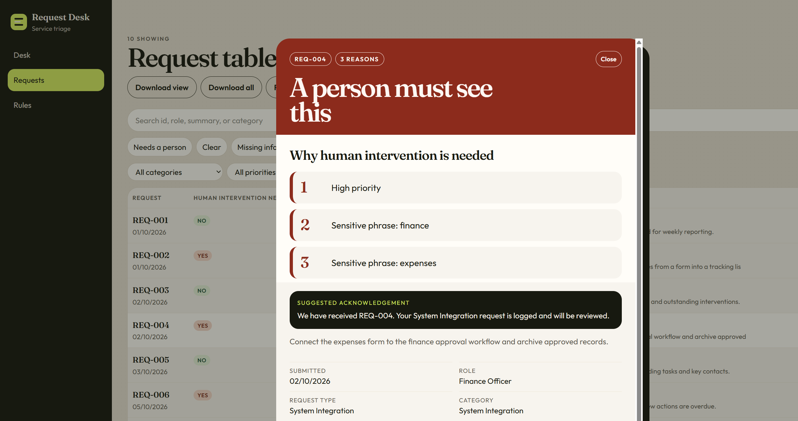
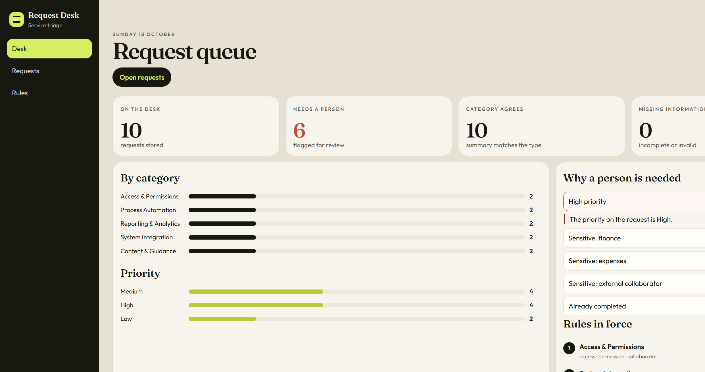

Request Desk
Request Desk reads a spreadsheet of service requests and works through six tasks. The requests are synthetic examples. Nothing is sent outside this desk.
Sign in with this account
Username admin
Password RequestDesk!2026
Open the desk, enter that username and password, and choose Enter the desk. The six tasks below are what the desk does after you sign in.
Task 1
The desk reads at least five synthetic requests from a CSV file. The sample file has ten requests, numbered REQ-001 to REQ-010.
Each row becomes one request. A new request ID is added. An ID that is already on the desk is updated and read again. You can also add a single request with New request.
The file needs these columns: Request ID, Submitted Date, Requester Role, Request Type, Request Summary, Priority, Channel, and Status.

Task 2
As soon as a row is read, the desk checks that the required information is there and valid.
If a field is blank or not valid, that request is marked. On the request table, choose Missing information to see only those rows. In the sample shown here, every row is complete, so that list is empty.

Task 3
The desk reads the summary and looks for keywords. The first matching rule sets the category.
The starter rules are: Access & Permissions (access, permission, collaborator); System Integration (connect, synchronise, sync); Process Automation (automate, automated, reminder); Reporting & Analytics (dashboard, summary, engagement, analytics); Content & Guidance (guide, template, publish, announcement). If no keyword matches, the category is Uncategorised.

Task 4
Every request gets a short reply, in the same spirit as “We have received your request.”
REQ-004 is answered with: “We have received REQ-004. Your System Integration request is logged and will be reviewed.” If required information is missing, the reply names the missing fields.

Task 5
The column Human intervention needed? shows only Yes or No. Yes means a person should look at the request.
A request is marked Yes when any of these is true:
Select the request ID to see why. A red heading, A person must see this, lists the reasons. A green heading means no person is needed. On the queue, Needs a person shows how many requests are marked Yes.
Task 6
The desk keeps two results: a summary on the screen, and a file you can save.
That downloaded file is the result of the six tasks.
